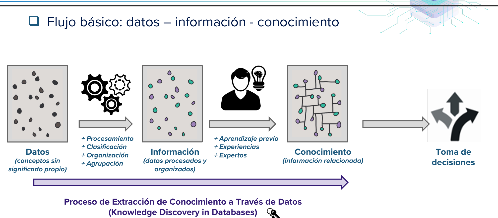
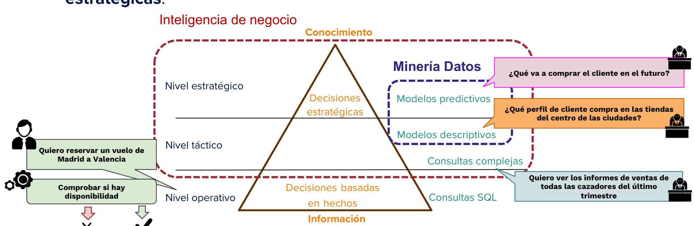
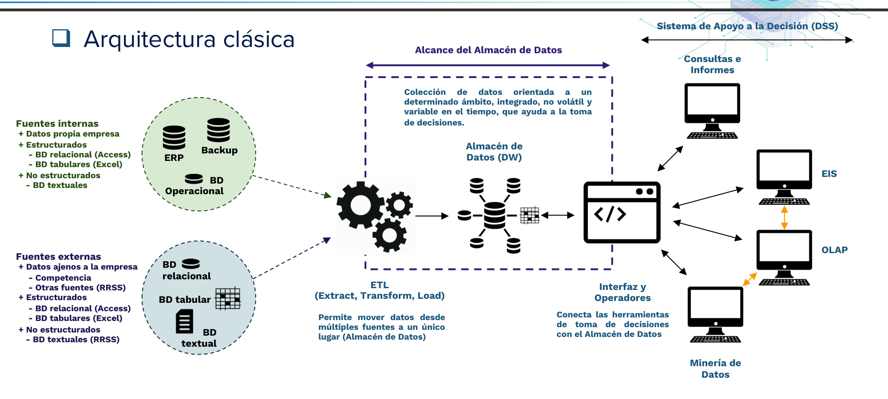
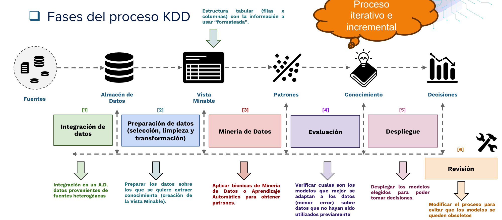
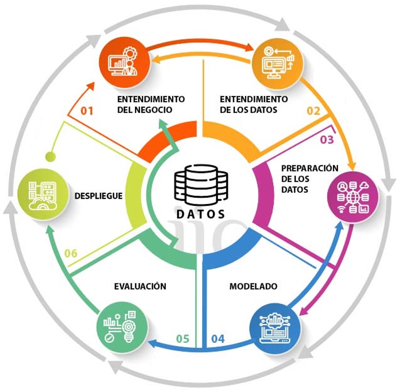
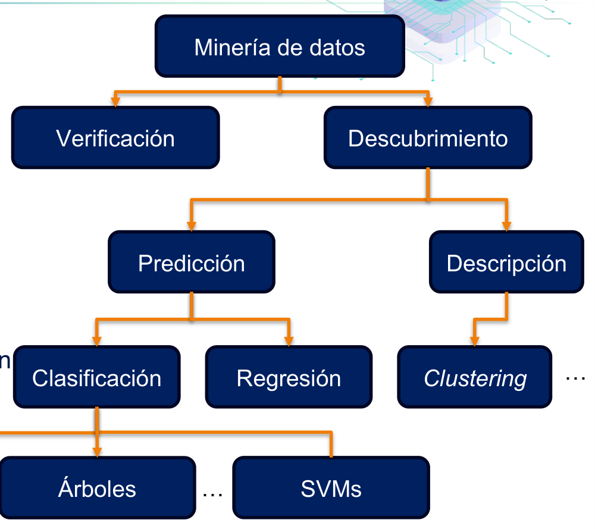

Introducción a la minería de datos
Tema 3 de 6 Cuarto curso, 1.º cuatrimestre ≈ 9 min de lectura
Temas de MYAD · 3/6
3.1 Introducción: de los datos al conocimiento
La cantidad de datos disponibles crece de forma exponencial: según la ONU, el 90 % de los datos del mundo se ha creado en los últimos dos años, se prevé un crecimiento del 40 % anual y en 2020 se crearon 64,2 zettabytes, un 314 % más que en 2015. Sin embargo, la capacidad de análisis del ser humano es constante, así que hace falta automatizar la generación de conocimiento a partir de los datos. Eso es la minería de datos.
Para entenderlo mejor
Big Data para el desarrollo sostenible — ONU — fuente de las cifras (artículo, enlazado en las diapositivas).
3.1.1 Dato, información y conocimiento
No son lo mismo:
- Dato: representación simbólica (un número, una letra) sin sentido semántico; por sí solo no aporta información y describe un hecho puntual.
- Información: datos organizados y procesados, con significado (relevancia, propósito y contexto). Ayuda a tomar decisiones.
- Conocimiento: interpretación personal (subjetiva) de la información; tiene significado para quien la asimila y entiende.
| Dato | Información | Conocimiento |
|---|---|---|
| 35 º | Temperatura exterior superior a la media | Riesgo de incendio alto |
| 34 % | Humedad exterior inferior a la media | |
| 60 km/h | Velocidad del viento | |
| Matorral | Tipo de vegetación |
El flujo es: los datos se convierten en información mediante procesamiento, clasificación, organización y agrupación; la información se convierte en conocimiento añadiendo aprendizaje previo, experiencias y expertos; y el conocimiento lleva a la toma de decisiones. Todo este recorrido es el proceso de extracción de conocimiento a partir de datos (Knowledge Discovery in Databases, KDD).

3.2 Inteligencia de negocio
La inteligencia de negocio (BI, Business Intelligence) es el conjunto de tecnologías de la información que dan a una organización el conocimiento necesario para tomar decisiones estratégicas.
Se puede ver como una pirámide con tres niveles, de la información (base) al conocimiento (cima):
| Nivel | Herramienta | Ejemplo de pregunta |
|---|---|---|
| Operativo | Consultas SQL | "Quiero reservar un vuelo Madrid–Valencia": ¿hay disponibilidad? |
| Táctico | Consultas complejas (decisiones basadas en hechos) | "Informes de ventas de todas las cazadoras del último trimestre" |
| Estratégico | Minería de datos: modelos descriptivos y predictivos (decisiones estratégicas) | "¿Qué perfil de cliente compra en las tiendas del centro?" (descriptivo), "¿Qué comprará el cliente en el futuro?" (predictivo) |

3.2.1 Componentes de un sistema de BI
- Almacenes de datos (DW): guardan en un único sitio grandes cantidades de datos de muchas fuentes heterogéneas (ver temas 1 y 2).
- Herramientas OLAP: manejan, combinan, agregan y rotan grandes volúmenes de información para mostrar vistas multidimensionales con distintos niveles de agregación (roll-up, drill-down, slicing/dicing, pivot).
- Paneles de control (dashboards) y otras herramientas de supervisión: muestran el estado de la organización en todo momento.
- Herramientas de minería de datos: más complejas que OLAP; descubren patrones de conocimiento y buscan soluciones a objetivos empresariales (p. ej. reducir colas en un supermercado o aumentar las ventas de un producto).
3.2.2 Arquitectura clásica

De izquierda a derecha:
- Fuentes internas (datos de la propia empresa: ERP, backups, BD operacional) y externas (competencia, redes sociales). Unas y otras pueden ser estructuradas (BD relacionales tipo Access, tabulares tipo Excel) o no estructuradas (BD textuales, RRSS).
- ETL (Extract, Transform, Load): mueve los datos de las múltiples fuentes a un único lugar.
- Almacén de datos: colección de datos orientada a un ámbito, integrada, no volátil y variable en el tiempo, que ayuda a decidir.
- Interfaz y operadores: conecta las herramientas de decisión con el almacén.
- Sistema de apoyo a la decisión (DSS): consultas e informes, EIS (Executive Information System), OLAP y minería de datos.
3.2.3 OLAP frente a minería de datos
| OLAP | Minería de datos |
|---|---|
| Consultas sobre datos ya existentes: no crea información nueva | Análisis inductivo (predictivo) sobre los datos existentes: crea información nueva |
| Puede dar resultados erróneos si los datos almacenados son erróneos | Puede equivocarse si los datos son erróneos/inconsistentes o si el modelo es inadecuado |
| Consultas multidimensionales (venta vs producto vs tiempo) | Varios tipos de decisiones: clasificación (binaria Sí/No o multiclase) y agrupamiento |
| Cambia de nivel de detalle sin rehacer la consulta (venta vs producto vs anual → mensual) |
Ejemplos: "¿cuántas naranjas se vendieron en julio de 2022?" y "¿qué tipo de verdura fue la más vendida en 2022?" son OLAP (preguntan por lo que ya pasó). "¿Cuántos puerros debería comprarle al proveedor?" y "¿cuál será la predicción de ventas de verduras en 2023?" son minería de datos (requieren predecir).
Analogía
OLAP es el espejo retrovisor: te enseña con todo detalle lo que ya ha pasado, desde el ángulo que quieras. La minería de datos es el GPS que, a partir de lo recorrido, estima lo que viene.
3.3 El proceso KDD
KDD es la extracción de conocimiento a partir de datos. Su definición clásica (Fayyad et al., 1996) tiene cada palabra pensada:
"Proceso no trivial de identificar patrones válidos, novedosos, potencialmente útiles y comprensibles a partir de datos."
- No trivial: usa un conjunto de métodos, técnicas y modelos complejos.
- Identificar patrones: deducir o inferir reglas o funciones hipotéticas que se extrapolan de los datos existentes.
- Válidos: con el menor error posible (el error 0 no existe en informática). Si el conocimiento no es suficientemente válido, no sirve.
- Novedosos: información nueva y no obvia. "El 100 % de los pacientes de maternidad son mujeres" es válido, pero obvio: no aporta conocimiento.
- Potencialmente útiles: válido y novedoso no implica útil. "Los clientes que compran champú compran tomates" puede ser cierto, pero no tiene sentido poner el champú junto a los tomates.
- Comprensibles: que los patrones se entiendan. No siempre es posible: depende del modelo (redes neuronales y deep learning no son explicables; los árboles de decisión sí).
3.3.1 Fases del KDD
Es un proceso iterativo e incremental:
- Integración de datos: juntar en un almacén datos de fuentes heterogéneas.
- Preparación (selección, limpieza y transformación): crear la vista minable, una estructura tabular (filas × columnas) con la información ya "formateada".
- Minería de datos: aplicar técnicas de minería o aprendizaje automático para obtener patrones.
- Evaluación: comprobar qué modelos se ajustan mejor (menor error) usando datos no utilizados antes.
- Despliegue: poner en uso los modelos elegidos para tomar decisiones.
- Revisión: modificar el proceso para que los modelos no se queden obsoletos.

3.3.2 Metodología CRISP-DM
CRISP-DM (Cross Industry Standard Process for Data Mining) es una metodología específica para minería de datos. Es flexible (se adapta a cada proyecto) y es un modelo "ideal" de naturaleza cíclica: en la práctica las fases pueden hacerse en otro orden, repetirse o volver atrás. Tiene seis fases:

- Entendimiento del negocio: comprender los objetivos y requisitos desde la perspectiva empresarial.
- Entendimiento de los datos: recopilar y familiarizarse con los datos, detectar problemas de calidad y descubrir subconjuntos interesantes según los objetivos.
- Preparación de los datos: obtener la vista minable:
- Selección: explicar por qué se incluyen o excluyen datos.
- Limpieza: generar un informe de limpieza.
- Construcción: crear atributos nuevos o derivados.
- Integración: mezclar datos y generar agregados.
- Formateo: cambios de diseño o formato. (Construcción, integración y formateo forman la transformación.)
- Modelado: elegir y aplicar técnicas de minería a la vista minable.
- Evaluación: valorar los modelos en el contexto del negocio, es decir, si responden a los requisitos comerciales. Ojo: un error bajo en el modelado no implica que el modelo sea útil para la organización.
- Despliegue: explotar los modelos, integrarlos en la toma de decisiones, generar informes sobre el conocimiento extraído…
Para entenderlo mejor
CRISP-DM — Wikipedia — descripción de las seis fases (artículo).
3.4 Taxonomía de métodos de minería de datos
Los métodos se dividen primero en dos familias:
- Verificación: evaluar una hipótesis con estadística tradicional (tests de bondad de ajuste, tests de hipótesis).
- Descubrimiento: la mayoría se basa en aprendizaje inductivo: construir un modelo generalizando a partir de un conjunto de ejemplos.
El descubrimiento, a su vez, se divide en:
- Aprendizaje supervisado (predicción): descubre la relación entre atributos de entrada (variables independientes) y atributos de salida (variables dependientes) para predecir la salida ante una entrada nueva. Incluye clasificación (salida categórica) y regresión (salida numérica), con técnicas como redes neuronales (ANN), árboles o SVM.
- Aprendizaje no supervisado (descripción): modela cómo se distribuyen las instancias en un espacio de entrada de alta dimensión, sin salida conocida (p. ej. clustering).

3.x Ideas clave
- Datos crecen exponencialmente (90 % en dos años, 64,2 ZB en 2020), la capacidad humana no → hay que automatizar la extracción de conocimiento.
- Dato (símbolo sin significado) → información (datos organizados con contexto) → conocimiento (interpretación) → decisión.
- BI: DW + OLAP + dashboards + minería. Nivel operativo (SQL), táctico (consultas complejas) y estratégico (minería: modelos descriptivos y predictivos).
- OLAP consulta lo existente (no crea información); minería induce y predice (crea información nueva).
- KDD (Fayyad 1996): patrones válidos, novedosos, útiles y comprensibles. Fases: integración → preparación (vista minable) → minería → evaluación → despliegue → revisión.
- CRISP-DM: negocio → datos → preparación → modelado → evaluación → despliegue; cíclico y flexible. Bajo error ≠ utilidad.
- Taxonomía: verificación vs descubrimiento; descubrimiento = supervisado (clasificación, regresión) o no supervisado (clustering).